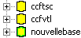
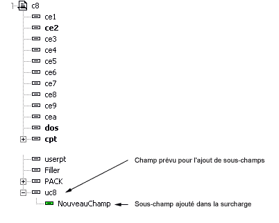

Lorsque vous éditez un dictionnaire surchargé vous pouvez :
créer des sous-champs dans des champs existants,
créer de nouveaux fichiers,
créer de nouvelles tables,
créer de nouveaux index,
créer de nouveaux liens (voir Surcharge des liens ),
créer de nouveaux champs virtuels.
Par contre, vous ne pouvez pas modifier les objets qui appartiennent au dictionnaire surchargé, ni ajouter de nouveaux champs aux tables existantes.
Bien évidemment, les objets que vous avez ajouté dans le dictionnaire restent totalement modifiables.
Reconnaissance
Les éléments qui appartiennent à la surcharge sont reconnaissables dans l’arbre du dictionnaire. L’icône qui les représente est bordée d’un trait vert. Les éléments ascendants sont également bordés de vert.
Exemple :

Ajout de champs à une table
D’après ce qui vient d’être dit, il n’est pas possible de rajouter des champs à une table si le dictionnaire est surchargé. Or c’est bien évidemment ce que nous désirons faire.
Pour ajouter des champs à une table, nous allons en fait créer des sous-champs dans un champ existant. Pour ce faire, il faut évidemment que le créateur du dictionnaire ait prévu un champ vide (suffisamment grand) dans lequel nous allons placer les nouveaux champs.
Dans les applications Divalto, les tables contiennent toujours un champ prévu à cet effet. Son nom est celui de la table suffixé par le caractère « u » (la table c8 contient un champ c8u).
La propriété "Zone U" est cochée pour ce type de donnée (dans ce cas elle sera extensible dans le contexte des surcharges multiples)
Exemple

Remarques
Si la taille du champ prévu pour la surcharge est insuffisante pour contenir tous les nouveaux champs, il faudra créer une nouvelle table et la gérer en parallèle. Avec la notion de surcharges multiples, cette contrainte disparaît, la zone U devenant extensible.
Dans le cas des surcharges multiples : (voir les détails dans la documentation Diva au chapitre : <Techniques de programmation><Surcharges multiples>)
le choix <Outils><Ne voir que le dictionnaire principal> permet de ne voir que le dictionnaire de base sans aucune surcharge
le choix <Outils><Ne voir que le dictionnaire principal et son premier niveau de surcharge> permet de voir le dictionnaire de base et la première surcharge trouvée d'après les implicites.
Voir également :